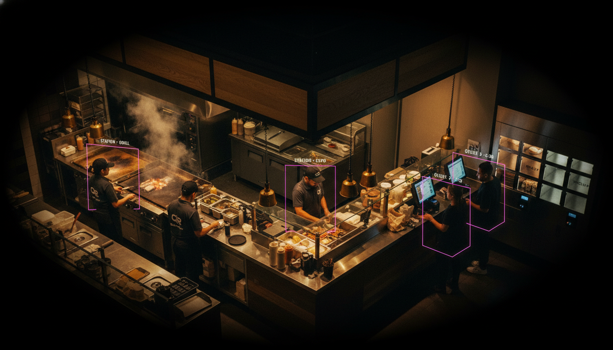
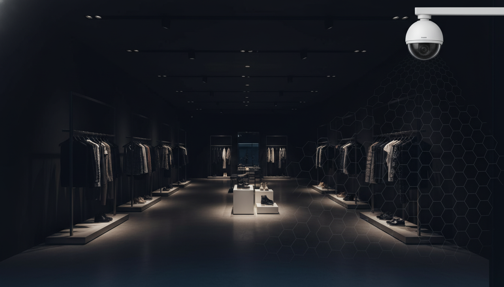
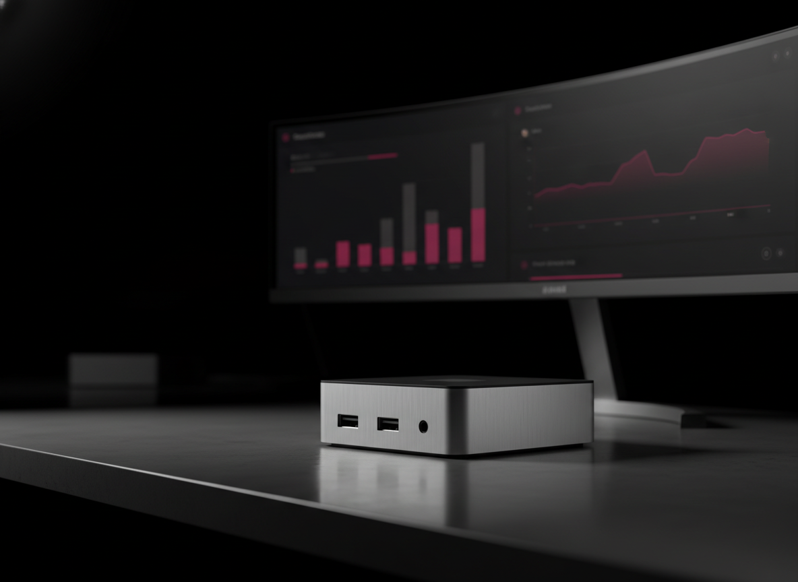
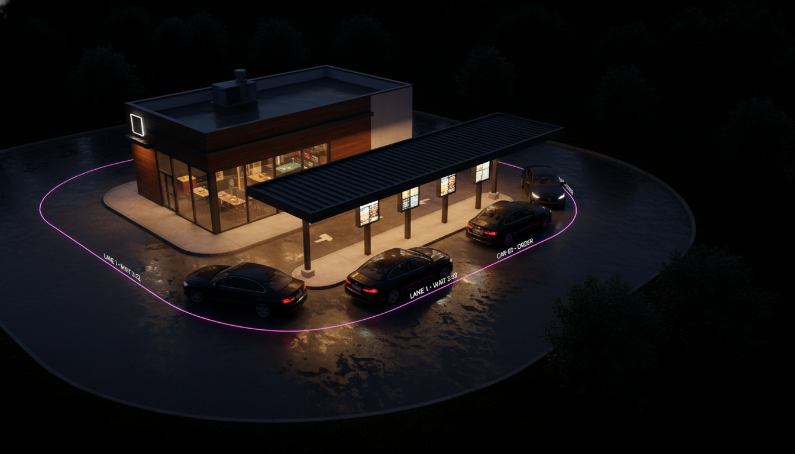
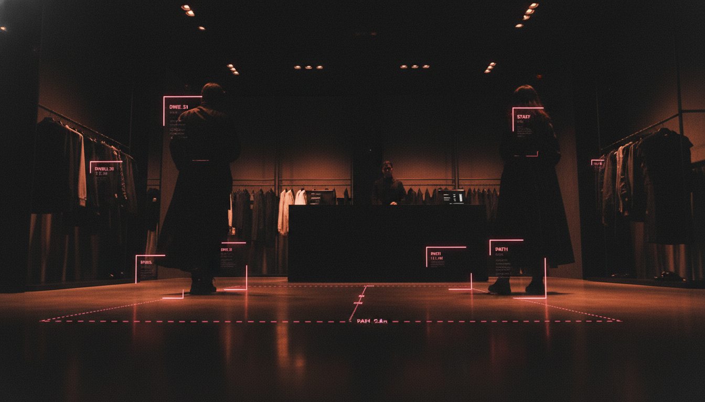
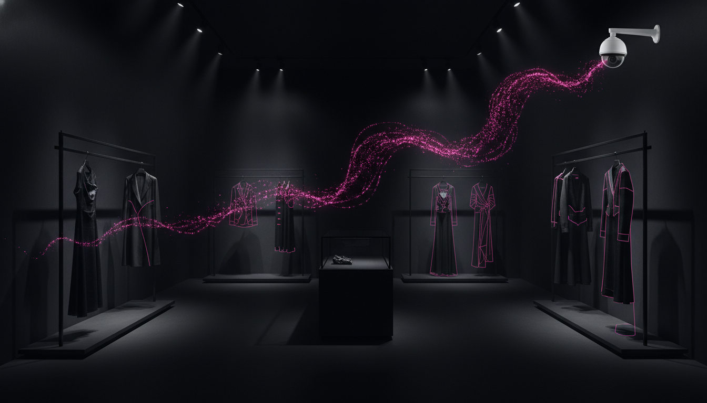

Burger count missed
A double leaves the line as a single. The operator never sees it.
RefundBrand trustSocial complaint

Introducing · EdgeVision × Fabric Lens
The vision system that doesn’t blink.
Custom-installed computer vision for quick-service restaurants — purpose-built cameras, on-site edge compute, and real-time intervention at the stations you choose. Machine oversight that is more accurate, more consistent, and never looks away.
The Platform · The Lens
EdgeVision is Pattern AI Labs’ on-prem Vision + GenAI edge runtime. Fabric Lens is the quick-service-restaurant product built on it — purpose-built industrial cameras, an on-site edge appliance, and signal fusion with the equipment already on your line. Start with one station, scale at your pace.
The Visibility Gap
A QSR runs 8–12 stations across cook, prep, assembly and pass. A shift produces hundreds of orders, each carrying 15–30 quality and accuracy checkpoints. The math does not work for human oversight.

IN-STORE CCTV · UNWATCHEDThe Compounding Cost
The moments that drive refunds, NPS damage, complaints and brand erosion. None are visible in real time today. All can be detected and resolved in real time by Fabric Lens.
A double leaves the line as a single. The operator never sees it.
The order spec says one sauce, a different one gets boxed.
Cheese on a no-cheese order. Allergen risk on the wrong customer.
Fryer recovers slow on a rush. Pale fries reach the bag.
The Product
Fabric Lens is a modular, custom-installed computer-vision platform for QSRs. Industrial cameras at the stations you choose to instrument, an on-site edge appliance, and signal fusion with the equipment already on your line. Start with one station, scale at your pace.

EDGE APPLIANCE · ONE PER STORECameras at your priority stations
Task-specific models analyse every frame
Rules and fusion logic evaluate the scene
Operator alerted at the station, in real time
The Intervention Loop
Real-time computer vision is only as valuable as the action it triggers. Fabric Lens closes the loop: every detected drift becomes an alert, an intervention, and an audit entry.
Drift identified
Rules evaluated
Operator notified
Corrected in frame
Logged for BI
Example · missing-sauce intervention. 14:32:08 — order #4271 boxed; vision detects entrée and fries but no sauce cup, KDS calls for one. 14:32:09 — alert fires to the assembly screen, audio chime at pass. 14:32:14 — sauce added, re-verified, order released, event logged.
How It Works
A real CV product is not one model. It is a stack: detection finds what is there, classification judges if it is right, action recognition reads the sequence, tracking holds identity through occlusion, and fusion correlates all of it with equipment and order data.
Finds and locates. Class, confidence, box, centroid.
Judges every item. Is it actually right?
Reads the sequence. Was the step done?
Holds identity across stations and occlusion.
Correlates vision with equipment and KDS.
Tech 01–02 · Perception
01 · OBJECT DETECTION
02 · CLASSIFICATION
A box says something is there. Classification says exactly what — and exactly whether it is right.
Tech 03–04 · Time & Identity
03 · ACTION RECOGNITION
04 · TRACKING + RE-ID
Not just how long an order took — where it lost the time. Tracking plus KDS timestamps turn ‘six minutes’ into ‘ninety seconds lost at assembly.’
Tech 05 · The Moat
Three input streams correlated frame by frame inside a single fusion core. It catches what one signal alone misses, separates equipment fault from human error, and confirms rather than merely detects.
VISION
Detection, classification, action recognition, tracking
EQUIPMENT TELEMETRY
Fryer temp, cook timers, holding-cabinet state, weight sensors
KDS + POS
Order content, modifiers, timestamps, bump events
Fusion in one line. The fryer reports done-at-temp. Vision reports the product is under-colored. Neither signal alone catches it — together they say the equipment is drifting, not the cook.
Custom Models
Every custom model moves through the same six-stage lifecycle. The first pass produces a working model; the loop keeps it accurate as your menu, lighting and seasons change.
Footage from your stations under real conditions
Label items, regions and actions to your spec
Fine-tune the task-specific model
Test on held-out footage; tune precision & recall
Push to the edge appliance, run live
Track drift, surface edge cases, feed back
What You Can Measure
Built from the way a multi-unit operator actually thinks. Each category ties to a revenue line or a brand-risk line, measured continuously through the fusion of video and equipment data.
Perfect-order rate, item-level error, count accuracy, modifier compliance, condiment attach, packaging accuracy.
Cook doneness, cook-time conformance, temp at handoff, hold-time compliance, portion & build consistency.
Ticket time by station, station dwell, cook recovery, drive-thru time, throughput per labor hour, SLA breach.
Danger-zone events, hold-time violations, handwash compliance, cross-contamination risk, HACCP checkpoints.
Calibration drift, oil quality & fryer health, recovery-time degradation, holding-cabinet conformance, sensor faults.
Staffing vs demand, throughput per labor hour, SOP adherence, overproduction waste, remake and refire rate.
The Fusion Advantage
These five do not exist in a camera-only system or an equipment-only system. They require video and equipment data cross-referenced, frame by frame — the reason signal fusion is the moat.
Fryer reports done-at-temp; vision reports under-colored. The equipment is the problem, not the cook.
Not ‘the order took six minutes’ but ‘it lost ninety seconds at assembly.’
Holding cabinet reports a full pan; vision sees it empty. The sensor needs service — flagged.
Oil TPM rising, product color darkening in step. The fries are worse because the oil is spent.
Queue depth and per-station throughput forecast a ticket-time miss 60–90s before it happens.
The moat. Competitors with cameras can copy detection. They cannot copy what they have not instrumented: the equipment signal layer underneath.
Use Cases · QSR
Three operational levers every QSR brand tracks weekly via spreadsheets and mystery-shopper audits. Fabric Lens tracks them per-shift, per-station, per-car — automatically.
Speed of Service
Kitchen Choke-Points
Food Safety & Hygiene
Use Cases · Every Service Window

DRIVE-THRU · LANE TIMING · LIVEQueue vs labour by daypart · kiosk abandonment · greeter compliance · mobile-order handoff
Station coverage per shift · hot/cold-hold compliance · assembly time · wipe-down cadence
Dining spillage & tray-bus cadence · restroom checks · slip-and-fall flagging · closing audit trail
PPE per station · handwash vs SOP · camera-health monitoring · executive summary email
Use Cases · Store Floor · Retail
Fabric Lens runs on the same EdgeVision platform as RetailTrack. The same feeds answer two questions at once: what is the customer experiencing, and how is the team performing?
Customer Analytics
Staff Analytics

STORE FLOOR · CUSTOMER + STAFFSame hardware. Same cameras. Two outcomes. Intel edge compute on the store LAN — no extra installation.
Product Architecture
Three zones: a custom install in the restaurant, one edge appliance running vision and fusion locally, and AWS-native managed services for training, fleet management and reporting.
On-premise
Custom install per store
Edge appliance · Lens
One per restaurant
AWS cloud
Managed services
Hardware & Privacy
High-performance Intel edge compute on the site LAN reads existing and purpose-built cameras, and runs the full detection-and-fusion pipeline locally. The cloud is for training and fleet management — never the real-time detection path.
HARDWARE · REFERENCE EDGE NODE
PRIVACY & SECURITY
The Paradigm Shift
| Dimension | Traditional CV | EdgeVision Fabric Lens |
|---|---|---|
| Detection | Bounding boxes & pixel thresholds | Contextual scene understanding |
| Accuracy | High false-positive in varying light | Adaptive to lighting & occlusion |
| Quality | Cannot judge if the item is right | Fine-grained, pixel-level classification |
| Root cause | Counts and timestamps only | Fusion separates equipment from human error |
| Adaptability | Manual re-calibration per store | Continuous-learning custom models |
| Insights | Tells you what happened | Tells you why — and intervenes in real time |
“Traditional analytics tells you an order left the line. Fabric Lens tells you the double left as a single, the sauce cup was missing, and the fryer — not the cook — was drifting.”
Production Lineage
Fabric Lens is not a first attempt. The custom-model approach, the edge architecture and the QSR domain work all trace to production deployments the team has built and run.
Custom vision models for produce quality and self-checkout. Retrained per category, in production at scale.
Quality and consistency analytics purpose-built for a multi-unit QSR operator. Vision plus operational signal.
Edge-first computer vision with on-site inference and real-time event generation — the architectural lineage for Lens.
Engagement
Custom install means a structured roadmap. Each phase has clear outputs and acceptance criteria; pricing is tiered by chain size to support both pilot economics and scale economics.
Camera audit, station prioritisation, AWS architecture review, pilot-store selection.
Custom camera install, edge appliance, first signature model, UAT on the pilot station.
Additional models, sensor fusion, dashboard tuning, multi-store readiness.
Zero-touch provisioning, per-store onboarding, continuous model expansion.
What you get at the end of the pilot: a running Fabric Lens install on your priority stations, a first signature model on your own footage, a live intervention loop, and a dashboard your operators have run a full daily cycle on.

Production-grade computer vision for QSR operations. Custom models, custom-installed, edge-first. Methodology you can audit, KPIs you can run the business on.